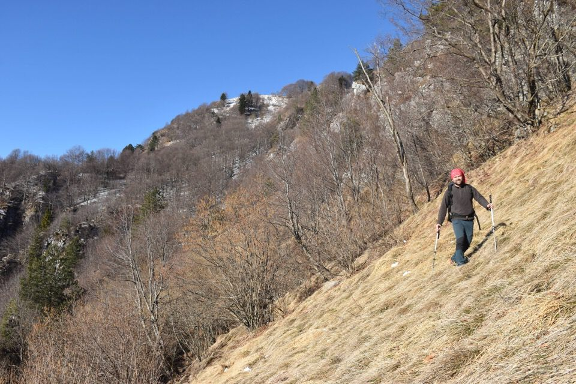
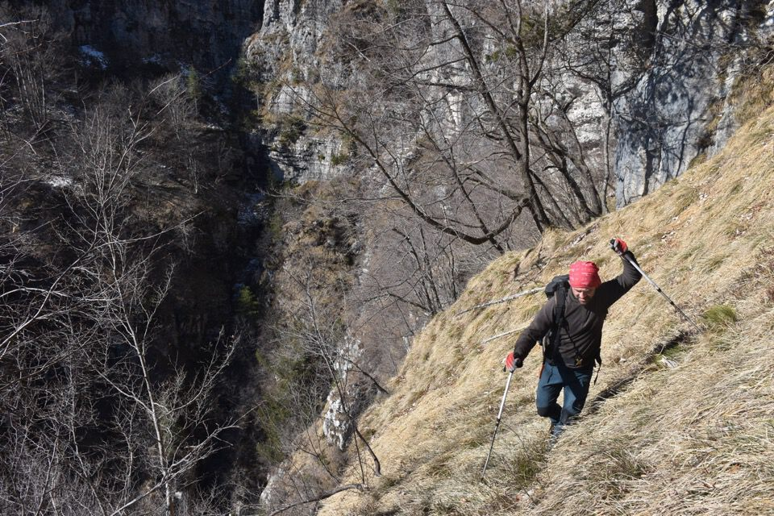
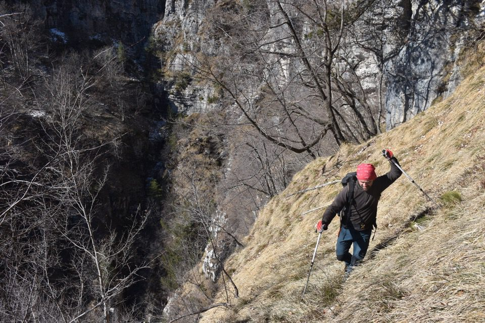

Bah! Speravamo in un buon sentiero di camosci e invece c'ha toccato penare. Non ci sono più i camosci di una volta...
Che bello percorrere i sentieri CAI...
I camosci su come pazzi per una crestina.
Oh eccoci alla Cengla.
Sono già stufo di 'ste loppe.
È lunga qua la questione!
Che orrore.
La Cengla ha diversi passaggi che a prima vista destano preoccupazione: esposto, pale belle ripide, poca traccia di camosci. Ma in realtà è sempre facile.
Uno dei pochi passaggi belli.
 

Non è una cengla, è un serpentone, come ha detto Kelen.
Non ne possiamo più!
Quando a casa ho visto la foto ho pensato ma quando mai abbiamo fatto un passaggio del genere? O meglio, lo ricordavo, ma non è assolutamente impegnativo come sembra.
La Cengla ci ha esasperato, per cui al penultimo costone decidiamo di tirare su dritto per un costone arrivando dritti in cima al monte Iovêit.
Bellissima visuale verso Flagjél-Cuâr.
Snobbiamo la cima del Taiêit in favore di malga Rossa: panorama più interessante.
Versante Sud del Frascola.
Caserine, con il Cuel da la Luna in basso a sx.
La Sciara (con il Teglara mimetizzato dietro!) e la Cuesta Spioleit; si vede pure Savuiêit, ah che bel posto!
E giù di nuovo per Cueste Relde: vediamo la prima parte della Cengla percorsa qualche ora prima; una volta nella vita basta.